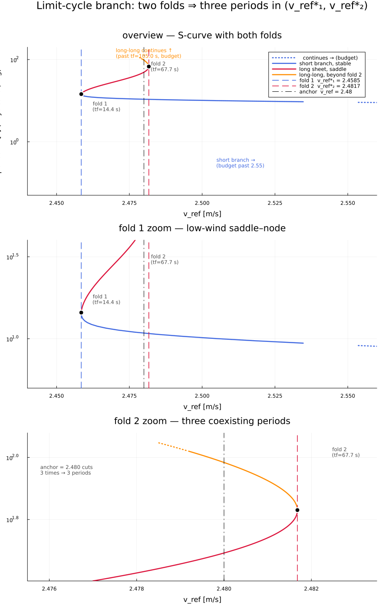
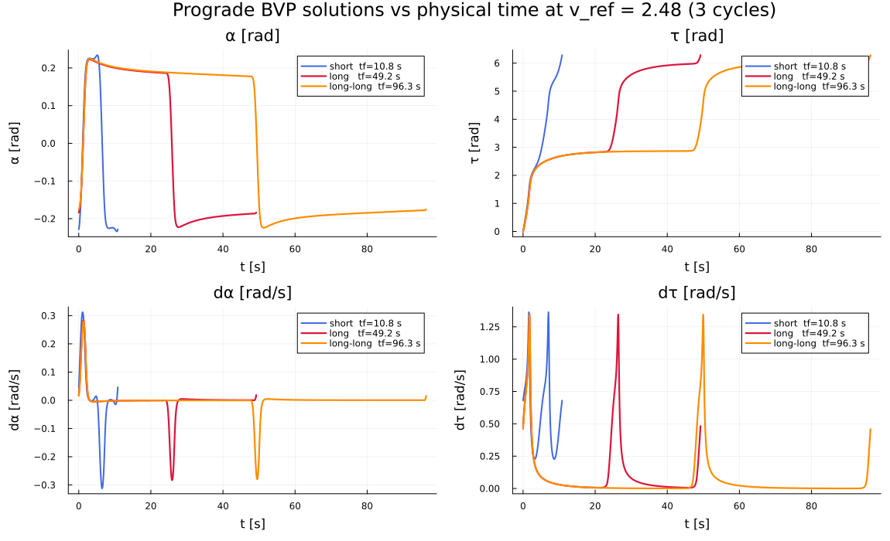
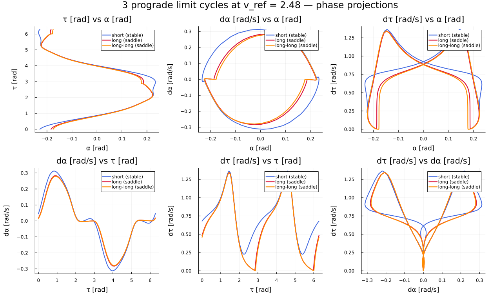

No callback is ok for short integrations (tf = 20 s), but error accumulates for longer integrations(tf = 100 s). Callback fixes that, in exchange for a longer runtime.
tol = 1e-3, alg = Tsit5
Dense output evaluated on a logarithmically regular grid. Without callback: O(t) residual on speed, integrated to O(t^2) residual on position. The callback removes the trend, making both residuals O(1), it does not correct for a potential phase error.
As we reduce the integration tolerance and for each mof the three models, the sequence of trajectories converge toward the same reference, tight-tolerance trajectory (max_{t in range(0, t_f, N=1001) norm(x_i(t) - x_ref(t))}, where norm is the Euclidean norm on R^3, x_i is the trajectory of interest and x_ref is the reference trajectory). Therefore, we confirm that the model presented in the main section of this paper is equivalent to the original 10D model.
┌ Info: Timing
│ reference (10D, no callback) = 44 ms
│ reference + callback = 54 ms
│ proposed model (4D) = 5.9 ms
│
│ reference to reference+callback = 1.25x slowdown
│ reference to proposed model = 7.44x speedup
└ reference+callback to proposed model = 9.29x speedup
Note: The runtime of the callback only is twice that of the 4D implementation; the code of 10D + callback would always be slower than 4D, therefore we didn't optimize it as much.
Shows the set of possible positions for the kite. The mesh is the border of the unions of spheres of radius $\ell$ whose center lie on the blue circle, which is the set of all arm-tip positions, i.e. a horizontal circle of center O and radius $a$. The kite can only be inside the mesh. It is on the boundary when the arm and the lines are contained in the same vertical plane, and is strictly inside otherwise. The shape is a spindle torus, i.e. it self intersects, because the lines are longer than the arm.
I should mention the symmetry in the paper if not already the case (α, τ) -> (-α, τ+π).
The lemniscate, which forms the base of the kite's cone of constraints, is parameterized by $\tau$ and its shape is controlled by the design parameters $\theta_0$, $\Delta\theta$, and $\Delta\phi$. Trajectories with increasing $\tau$ (blue) result in a flight path that ascends in the middle and descends at the sides, while decreasing $\tau$ (orange) produces the inverse motion. The $y$-axis is inverted to align with the orientation of the kite's trajectory.
Plot all possible positions for (α, τ) in [-π, π]^2, after adding the cone constraint ?
Stream lines of vector field ddq(q, dq=(0,0)) (not physical trajectories) gives an intuition of the stability of each equilibria, where nullclines cross, there is an equilibrium. Red background = upwind arm. Marker nomenclature: white=arm is downwind (i.e. grey region) and black it is upwind, circle=equilibrium near the center and diamond on the sides.
Zero acceleration curves and equilibria of the dynamics. The black arrows represent the direction of the vector field $\ddq(\vq, \dq = 0)$, the orange lines are the nullclines of $\ddot \alpha(\alpha, \tau)$, \emph{i.e.} the points $(\alpha, \tau)$ such that $\ddot \alpha(\alpha, \tau) = 0$, and the blue lines are the nullclines of $\ddot \tau(\alpha, \tau)$. At their intersections lie the equilibria of the system (all unstable), with color codes ranging from yellow to blue according to the highest real part of their eigenvalues. The background is grey when the arm points downwind and red when it points upwind
Configuration for each equilibria, not a physical representation -- lines and arm are aligned in a vertical plane for all equilibria
All equilibria have at least one eigenvalue with positive real part, therefore they are all unstable. Regarding the magnitude of this real part, we can say that the ones on the side of the eight are
All tested (quasi-Monte-Carlo, Halton sequence) initilizations with dα=0 and dτ=1 converge toward a limit cycle in a few revolutions.
Depending on init, we have two different limit cycles: prograde (dτ > 0) and retrograde (dτ < 0). They follow different paths in 3D space. We limit our analysis to dτ>0 for the rest of this work (copy justification from ECC)
ECC: Projection of the kite trajectories onto the $YZ$ plane for the two limit cycles with opposite directions of motion (arrows indicate the direction of the kite motion). Zooming in on the trajectories shows that the two paths are distinct.
Convergence toward the limit cycle with initial condition $\vb q = 0$, $\dot \alpha = 0$ and $\dot \tau = 1$. Grey trajectory are for other $\vb q$ choices, sampled over $[-\pi, \pi[^2$. The trajectory gets closer to the limit cycle as the number of lemniscate revolutions (a revolution is defined as a sweep over the interval $[0,2\pi]$ for the angle $\tau$) increases. The linear trend in log-linear plot indicates exponential convergence; after each revolution, the distance to the limit decreases by a factor of $10^{2.64}$, until it stalls near the tolerance of the integration scheme.
The optimization variables are $\Theta = (\ell, I, b, \Delta\phi)$: the tether length $\ell$, the inertia $I$ of the rotating arm about its pivot, the generator braking slope $b$ and the lemniscate half-width $\Delta\phi$. The arm length stays fixed at $a = 2$ m and the half-height $\Delta\theta$ stays at its nominal 6°. The boxes are $\ell \in [15, 200]$ m, $I \in [62, 10^6]$ kg m², $b \in [1, 10^6]$ kg m² s⁻¹ rad⁻¹ and $\Delta\phi \in [10°, 90°]$; the inertia floor is structural, set by a strength-sized 2 m aluminium arm under the worst line tension of the study ($T \approx 34$ kN at 15 m/s, $I = m a^2/3 \approx 62$ kg m²). The objective is the average mechanical power over one limit cycle of the 4D model, at the reference wind of 9 m/s, starting from the default parameters with $b = I\omega$ (kinetic criterion).
┌ Θ optimum at 9 m/s (interior in all four variables)
│ tether length ℓ = 26.97 m (init 31.0)
│ arm inertia I = 351.6 kg m² (init 1300)
│ braking coefficient b = 737.1 (init 2888.3)
│ half-width Δφ = 16.62° (init 50°)
│ half-height Δθ = 6° (fixed)
│
│ period = 0.949 s (init 2.828)
│ average power = 12.253 kW (init 9.639, +27.1 %)
│ line tension min–max = 5.748–10.827 kN (init 3.356–8.856)
└ max kite acceleration = 938.6 m/s² (init 517.1)
No box constraint is active: Δφ sits at 16.6° between 10° and 90°, and I at 352 kg m² is 5.7 times the structural floor, so a power optimum prefers an arm heavier than strength requires. The tether shortens, the inertia and the period fall by factors of 3.7 and 3.0, and the faster cycle extracts 27 % more power from the same wind. This is a stationary optimum of a multimodal objective, not a global optimum.
Power, line tension and re-optimized parameters over the wind range, each parameter normalized by its maximum over the sweep. The dotted black curve is the 9 m/s optimum held fixed, the blue curve re-optimizes Θ inside the same boxes, and the grey dashed line marks the 9 m/s reference. Re-optimizing gains up to +13.5 % at 5 m/s and +8.6 % at 15 m/s, and nothing at 9 m/s by construction. The re-optimization adapts the device to the wind: ℓ shortens from 30.3 to 26.1 m and I falls from 451 to 326 kg m² as the wind rises, while b rises from 498 to 1151 and Δφ closes slightly from 17.6° to 16.3°. At 15 m/s the re-optimized cycle carries a 10 % lower maximum tension (33.2 → 29.7 kN) and a 33 % higher minimum (12.2 → 16.1 kN); at 5 m/s the maximum rises by 4.5 % (3.34 → 3.49 kN) and the minimum falls from 1.99 to 1.72 kN. Because the boxes are wide the objective is multimodal: the sweep is a stationary solution path, solved from the 9 m/s optimum with a retry from the neighbouring wind where that fails (7 m/s; a continuation from 11 m/s alone would stall on a 3.3 kW non-pumping branch at 12 m/s).
One parameter at a time around the optimum, the others fixed; the power is normalized by its value at the optimum and the black double lines are the box bounds. ℓ is by far the stiffest direction (−11.5 % power at −10 %, −8.1 % at +10 %); I is about four times flatter (−2.6 % at −10 %) and b more than twenty times flatter (−0.4 %); the Δφ pane loses 5.4 % at 15.0° and 2.9 % at 18.3°. No box constraint enters the ±10 % window, so none of them is visible: the optimum is interior in all four variables.
Δθ swept ±10 % around its nominal value with Θ held at the optimum. Power is flat (the whole window spans 3.4 % of power, the maximum being 12.279 kW at −4 %, only 0.2 % above nominal), so Δθ is not a power variable and optimizing it would buy nothing. It is a load and trajectory variable: at −10 % the minimum tension falls 5.4 % (5.75 → 5.44 kN), the maximum rises 3.8 % (11.24 vs 10.83 kN) and the tension spread widens 14 %, while the peak acceleration is U-shaped in Δθ (1035 m/s² at −10 %, a 926 m/s² minimum at +2 %, 1128 m/s² at +10 %). The nominal 6° is within 1.4 % of the acceleration minimum and within 0.2 % of the power maximum, which is why it is held fixed; choosing it for loads or handling qualities would require a multi-objective criterion.
10×10 limit cycles over Δθ ∈ [−20 %, +20 %] of nominal and Δφ ∈ [10°, 90°], with ℓ, I and b held at the optimum and nothing re-optimized. The white dashed lines mark the nominal Δθ and the optimal Δφ. Of the 100 cells, 90 converge: the whole Δφ = 90° row has no $\dot\tau > 0$ pumping cycle at these fixed parameters. Power is a Δφ effect with a sharp band near 19°, peaking at 12.46 kW (Δθ = −20 %, Δφ = 18.9°) and collapsing away from it to 1.2–6.4 kW at Δφ = 10° and 2–3 kW for Δφ ≥ 36.7°; within the band Δθ matters, the power falling from 12.46 to 9.90 kW as Δθ goes from −20 % to +20 %. The maximum tension peaks at 14.96 kN at the narrowest shape and is mildest along Δφ = 18.9° (10.1–10.6 kN). The peak acceleration is largest at narrow shapes, 3.5–4.7 km s⁻² at Δφ = 10°, and falls to 0.13–0.3 km s⁻² at Δφ = 81°, so the power-optimal band sits on the mild side of that ridge. The minimum tension is a large-Δφ effect: 6–10.5 kN near the power optimum, 1–2 kN at Δφ ≈ 72°, down to 0.13 kN at Δφ = 81°. A power-only optimum would therefore not be enough to choose the shape: the same power can be reached with very different tension and acceleration levels, and at Δφ = 90° no cycle exists at all.
Time series at the initial parameters and at the Θ optimum. The optimal cycle is three times faster (period 2.83 → 0.95 s) and extracts more power (9.64 → 12.25 kW) over the whole cycle, including at the minimum of the tension envelope, which nearly doubles (3.36 → 5.75 kN); the maximum kite acceleration rises from 517 to 939 m/s², the price of the tighter turns.
Caveats: the reported gains are stationary-solution gains of a multimodal objective, not global optima; the inertia floor is inactive at the optimum, so a mass-limited design would need a real mass or stress constraint; the shape map is a local sensitivity, since another shape could be paired with another optimal tether and inertia; only the $\dot\tau > 0$ cycle is considered, though a $\dot\tau < 0$ cycle exists at the same parameters; the quasi-steady 4D model has no line dynamics, structural flexibility or unsteady aerodynamics, so the acceleration is a diagnostic, not a measured load; and the objective ignores loads entirely.


